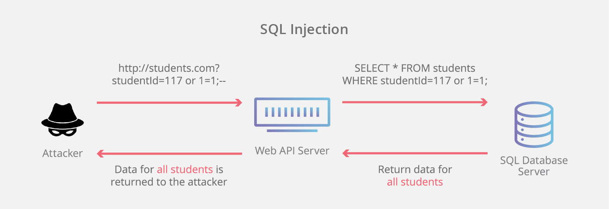

Websites are just as likely to be attacked as any other medium on the internet. With the increase in cybercrime over the past decade, demand for web security has also increased. Additionally, with the increase in mobile users, web security has gotten a lot of attention as websites can be accessed pretty much everywhere. There is a lot that goes into web security and protecting a user from malicious activity. This article will point out the common web domain attacks and protection measures for a safer web experience.
A term that pops up quite often in the cyber security world is social engineering. This term simply refers to the art of manipulating users so they give up confidential information. Examples range from tricking users in giving their passwords to realistic emails from a “friend” that is actually someone else. Hackers often use these tactics as it is much easier to fool someone into sharing sensitive data than it is to hack into a system. Security in a essence is built on the foundation of trust. Likewise, the same is true for when a user visits a website – do they feel confident and safe to share their sensitive information?
A common social engineering attack is the phishing attack. These are scams where hackers will portray to be a reputable company/website to deceive users in sharing sensitive information. Another type of attack is malvertising. As the name mentions, it involves spreading malware through the use of advertisements. A classic example is the one that says, “Your PC is infected, Scan now!”. Typically using an ad blocker helps with removing these malware-laden advertisements.
Other methods of web attacks take advantage of the vulnerabilities in web browsers. One common example of this is SQL injection attacks. Since most websites utilize back-end databases to store their user data, SQL injections can retrieve sensitive data back to the attacker. A successful attack can even take control of the entire database with administrative rights. This just goes to show how detrimental SQL injection attacks can be to a company.
Additionally, people who want to look more into browser exploits can explore "WebGoat". This is an insecure web application specifically designed to teach web security. What makes it more interesting is that it demonstrates server-side application flaws as well. Through the intended exercises, one can gain knowledge on application security and learn penetration testing. Furthermore, other web exploits include:
The great news is companies are aware of security issues and are constantly rolling out updates and patches. As I’m writing this article, I noticed there’s a new update for the Google Chrome browser. These updates keep the browser in tip-top shape and increase the safety parameters of a user’s experience. As mentioned earlier, there are several attacks that target browsers themselves and take advantage of their vulnerabilities. So, what are some methods of protection? The following list name a few methods that can be taken for a safer web experience: